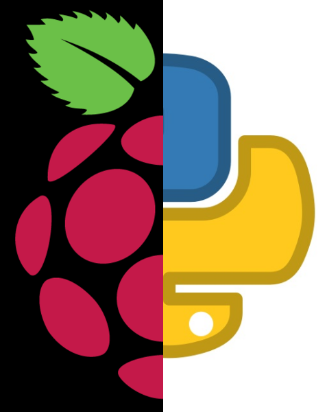

La fusion d’images est utilisée dans de nombreux domaines :
On pourrait aller plus loin en développant une application web où l’utilisateur peut importer deux images à fusionner.
Il y a différentes façon de fusionner une image de différentes manière comme :
from PIL import Image
#charger les 2 images
image1 = Image.open("raspberry.png")
image2 = Image.open("python.png")
# créer une nouvelle image vide
largueur,hauteur=image1.size
image_resultat=Image.new("RGB",(largueur,hauteur))
#parcourir tous les pixels
for x in range ( largueur):
for y in range(hauteur):
p1=image1.getpixel((x,y))
r1=p1[0]
g1=p1[1]
b1=p1[2]
p2=image2.getpixel((x,y))
r2=p2[0]
g2=p2[1]
b2=p2[2]
r=max(r1,r2)
g=max(g1,g2)
b=max(b1,b2)
#placer le pixel dans l'image
image_resultat.putpixel((x,y),(r,b,g))
#sauvegarde + afficher
image_resultat.save("image_fusion2.png")
image_resultat.show()
Une autre façon :
from PIL import Image
#charger les 2 images
image1 = Image.open("raspberry.png")
image2 = Image.open("python.png")
# créer une nouvelle image vide
largeur,hauteur = image1.size
image_resultat=Image.new("RGB",(largeur,hauteur))
# Copier la moitié gauche de image1
for x in range(largeur // 2):
for y in range(hauteur):
pixel = image1.getpixel((x, y))
image_resultat.putpixel((x, y), pixel)
# Copier la moitié droite de image2
for x in range(largeur // 2, largeur):
for y in range(hauteur):
pixel = image2.getpixel((x, y))
image_resultat.putpixel((x, y), pixel)
#sauvegarde + afficher
image_resultat.save("image_fusion3.png")
image_resultat.show()
